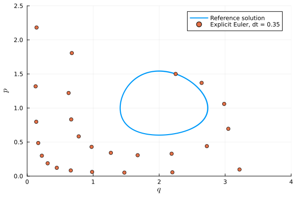
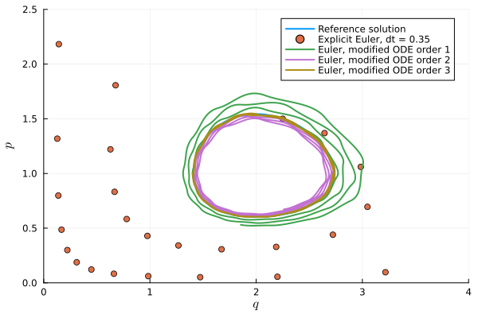

Modifying integrators
This tutorial describes the API of BSeries.jl related to the notion of modifying integrators. The main API entry point is modifying_integrator.
Given a first-order autonomous ordinary differential equation (ODE)
\[u'(t) = f(u(t))\]
and a B-series time integration method, the idea is to find a modified ODE
\[u'(t) = f_h(u(t))\]
such that the numerical solution with given time step size $h$ of the original ODE is the exact solution of the modified ODE, see [ChartierHairerVilmart2007] and [ChartierHairerVilmart2010].
Lotka-Volterra model
Here, we consider the explicit Euler method to solve the classical Lotka-Volterra model
\[p'(t) = (2 - q) p, \quad q'(t) = (p - 1) q.\]
First, we set up the ODE and compute some numerical solutions using OrdinaryDiffEq.jl.
using OrdinaryDiffEqfunction f!(du, u, params, t) p, q = u dp = (2 - q) * p dq = (p - 1) * q du[1] = dp; du[2] = dq return nothingendu0 = [1.5, 2.25]tspan = (0.0, 15.0)ode = ODEProblem(f!, u0, tspan)dt = 0.35sol_euler = solve(ode, Euler(), dt=dt)sol_ref = solve(ode, Tsit5())Next, we look at some phase space plots of the numerical solution.
using LaTeXStrings, Plotsfig = plot(xguide=L"$q$", yguide=L"$p$")default(linewidth=2)plot!(fig, sol_ref, idxs=(2, 1), label="Reference solution")scatter!(fig, last.(sol_euler.u), first.(sol_euler.u), label="Explicit Euler, dt = $dt")plot!(fig, xlims=(0.0, 4.0), ylims=(0.0, 2.5))
The exact solution of this problem is periodic, but the explicit Euler method produces an unstable trajectory. Here, we used an especially large time step to more clearly illustrate what will follow, but the qualitative behavior is the same for any time step size.
Next, we will derive a "modifying integrator". What this means is that we will determine a perturbed ODE right-hand side (RHS) such that when Euler's method is applied to the perturbed RHS, the result is the exact solution to the original Lotka-Volterra system. The perturbed system takes the form of a power series in the time step size dt, and in order to compute with it we will truncate it at a certain order. We can compare the accuracy (and qualitative behavior) obtained by truncating at different orders.
Here, we use Symbolics.jl for the symbolic computations.
using BSeries, StaticArrays, Symbolics# Explicit Euler methodA = @SMatrix [0//1;;]b = @SArray [1//1]c = @SArray [0//1]# Setup of symbolic variables@variables dt_symu_sym = @variables p qf_sym = similar(u_sym); f!(f_sym, u_sym, nothing, nothing)for truncation_order in 2:4 series = modifying_integrator(f_sym, u_sym, dt_sym, A, b, c, truncation_order) series = Symbolics.substitute.(series, dt_sym => dt) modified_f, _ = build_function(series, u_sym, expression=Val(false)) modified_ode = ODEProblem((u, params, t) -> modified_f(u), ode.u0, tspan) modified_sol_euler = solve(modified_ode, Euler(), dt=dt) plot!(fig, modified_sol_euler, idxs=(2, 1), label="Euler, modified ODE order $(truncation_order-1)")endplot!(fig, xlims=(0.0, 4.0), ylims=(0.0, 2.5))
We see that if we include one additional term, the resulting trajectory still grows, while with two additional terms the solution appears to be dissipative. With each additional term, the solution gets closer to the exact solution of the original problem, and with three added terms it is hard to see the difference between them at this scale.
References
Philippe Chartier, Ernst Hairer and Gilles Vilmart (2007) Numerical integrators based on modified differential equations DOI: 10.1090/S0025-5718-07-01967-9
Philippe Chartier, Ernst Hairer, Gilles Vilmart (2010) Algebraic Structures of B-series. Foundations of Computational Mathematics DOI: 10.1007/s10208-010-9065-1